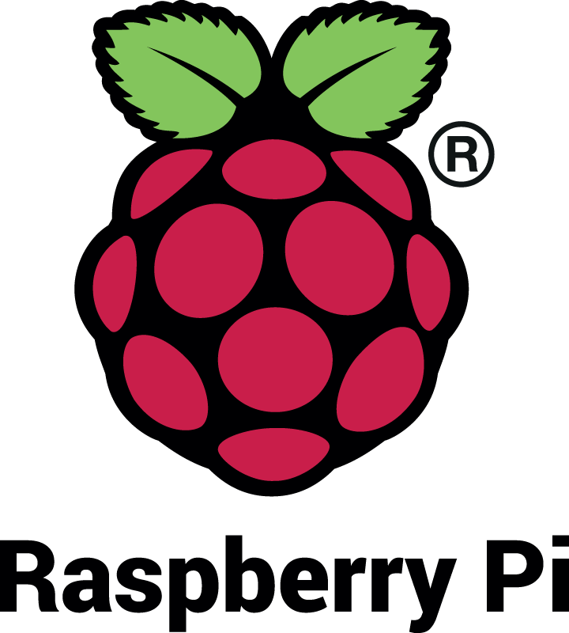

Raspberry Pi este o serie de computere mici, constituite dintr-o singură plăcuță de circuit şi dezvoltate în Regatul Unit de Fundația Raspberry Pi, cu scopul de a promova predarea informațiilor de bază despre calculatoare în şcoli şi în țările aflate în dezvoltare.
Primul model a devenit mult mai popular decât s-a anticipat, înregistrând vânzări şi în afara pieței-țintă inițiale, în special pe piața roboticii. Potrvit Fundației, până pe 9 septembrie 2016 au fost vândute 10 milioane de bucăți.
-Logoul Fundaţiei-

-Primul model al computerului, Raspberry Pi 1-